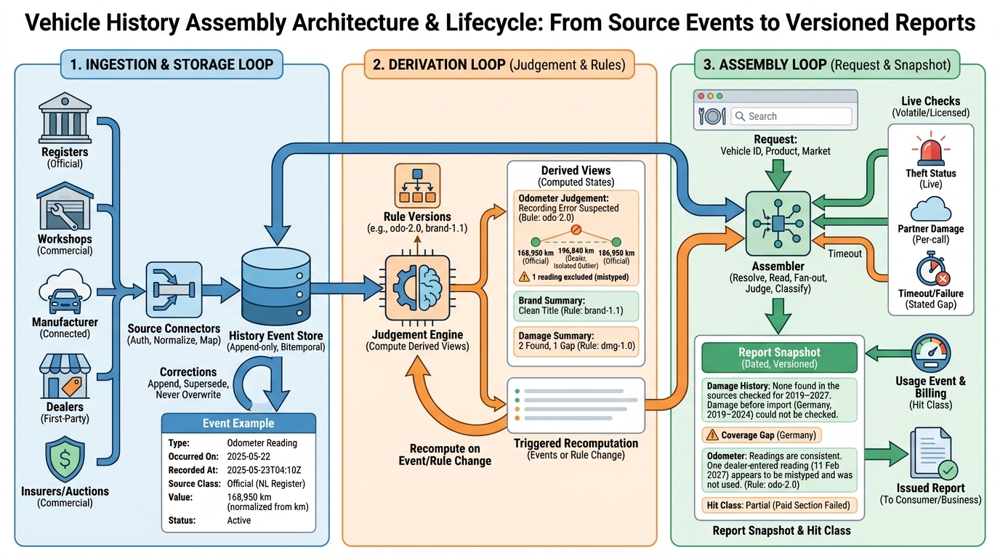

Part II — VEHICLE: Identity, Specification and History
What Happened to This Car: Damage, Odometer, Title and Service History

Image generated by Google Gemini (gemini-3-pro-image-preview)
Part II — VEHICLE: Identity, Specification and History

Image generated by Google Gemini (gemini-3-pro-image-preview)